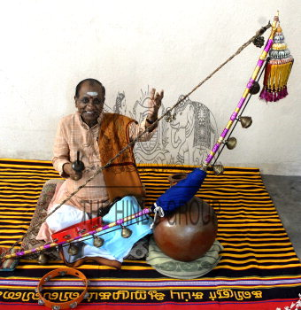

Traditional Music
Tamil Nadu is renowned for its classical and folk music traditions. Explore some of the key musical forms that highlight the cultural richness of this region.

Carnatic Music:
Carnatic music is a classical music tradition of South India, known for its intricate rhythms and devotional compositions.Nadhaswaram:
The Nadhaswaram is a traditional wind instrument used in South Indian temple music, characterized by its powerful and resonant tones.Thavil:
Thavil is a traditional percussion instrument used in South Indian music, known for its robust beats and rhythmic patterns.
